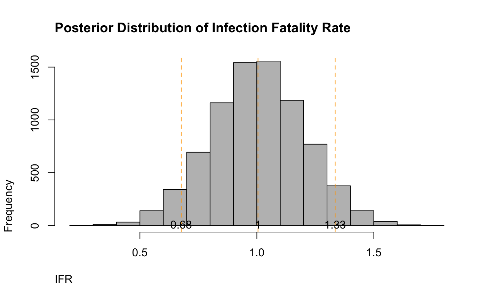

ifr-meta.Rmdlibrary(outbreaktools) library(brms) #> Loading required package: Rcpp #> Loading 'brms' package (version 2.12.0). Useful instructions #> can be found by typing help('brms'). A more detailed introduction #> to the package is available through vignette('brms_overview'). #> #> Attaching package: 'brms' #> The following object is masked from 'package:stats': #> #> ar
A re-interpreation of this excellent post with methods based on this book on meta-analysis.
The following are the data from a systematic review of Infection Fatality Ratios (IFR). As a reminder, IFRs are lower than Case Fatality Ratios (CFRs) because they include asymptomatic people. With roughly 30% of the population being asymptomatic (this needs another meta-analysis), there must be some adjustments made.
library(dplyr) #> #> Attaching package: 'dplyr' #> The following objects are masked from 'package:stats': #> #> filter, lag #> The following objects are masked from 'package:base': #> #> intersect, setdiff, setequal, union dat_meta <- tibble::tribble( ~"Author", ~"TE", ~"ci95", "Jung et al", .7, 0.52, "CEBM", .2, .1, "Ferguson et al", 1, .62, "Nishiura et al", .45, .09, "Tian et al", 1.15, 1.15, "Verity et al", .66, .6, "Russell et al", .6, .4, "Bendavid et al", .2, .04, "New York City", .93, .02, "Rinaldi et al", 1.29, .72, "Roques et al", .8, .45, "Villa et al", 1.6, .5, "Modi et al", .95, .75 ) %>% mutate(seTE = ci95/1.96)
Fit it.
m <- brm(TE|se(seTE) ~ 1 + (1|Author), data = dat_meta, prior = priors,chains = 4,cores = 4, iter = 4000, refresh = 0) #> Compiling the C++ model #> Start sampling #> Warning: There were 9 divergent transitions after warmup. Increasing adapt_delta above 0.8 may help. See #> http://mc-stan.org/misc/warnings.html#divergent-transitions-after-warmup #> Warning: Examine the pairs() plot to diagnose sampling problems
pp_check(m, nsamples = 25)+ ggplot2::theme_minimal()
summary(m) #> Warning: There were 9 divergent transitions after warmup. Increasing adapt_delta #> above 0.8 may help. See http://mc-stan.org/misc/warnings.html#divergent- #> transitions-after-warmup #> Family: gaussian #> Links: mu = identity; sigma = identity #> Formula: TE | se(seTE) ~ 1 + (1 | Author) #> Data: dat_meta (Number of observations: 13) #> Samples: 4 chains, each with iter = 4000; warmup = 2000; thin = 1; #> total post-warmup samples = 8000 #> #> Group-Level Effects: #> ~Author (Number of levels: 13) #> Estimate Est.Error l-95% CI u-95% CI Rhat Bulk_ESS Tail_ESS #> sd(Intercept) 0.82 0.19 0.54 1.27 1.01 865 1181 #> #> Population-Level Effects: #> Estimate Est.Error l-95% CI u-95% CI Rhat Bulk_ESS Tail_ESS #> Intercept 0.01 0.00 0.01 0.01 1.00 10731 5794 #> #> Samples were drawn using sampling(NUTS). For each parameter, Bulk_ESS #> and Tail_ESS are effective sample size measures, and Rhat is the potential #> scale reduction factor on split chains (at convergence, Rhat = 1).
post_samples <- posterior_samples(m, c("^b", "^sd")) names(post_samples) <- c("smd", "tau")
quantz <- quantile(post_samples$smd, c(.05, .5, .95))*100 hist(post_samples$smd*100, col = "grey", main = "Posterior Distribution of Infection Fatality Rate", adj = 0, ylab = "Frequency", xlab = "IFR") abline(v =quantz, lty = 2, col = "orange") text(x = quantz, y= 10,labels = round(quantz,2))
